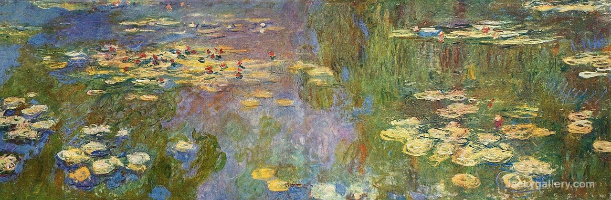
Despina's Personal Web Page
Education
I started my education journey in the middle school "Dimitar Miladinov". I was in the first generation to have 9 years of middle school. I finished with honors and was given the title of best student in the generation. Soon after, I got a full scholarship in the international school NOVA where I spent my highschool days. Unfortunately, due to the ongoing pandemic I didn't get to have a proper farewell party. Now, I am a student at the Faculty of Computer Science and Engineering.
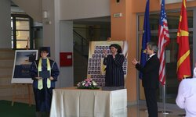
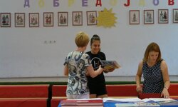
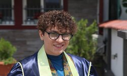
s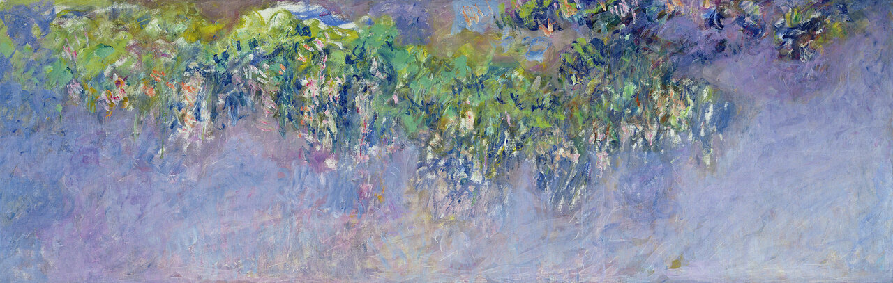
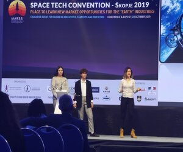
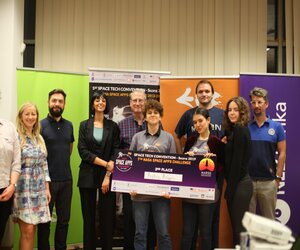
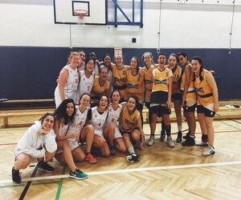
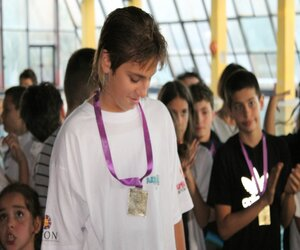
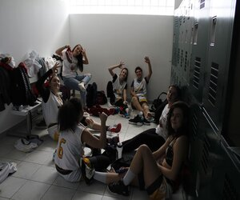
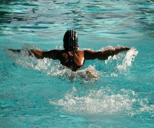
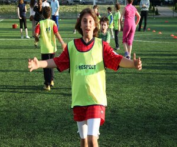
Achievements
During my time in middle school and high school I partook in many activities. Mainly I participated in competitons related to mathematics and physics. I attended many national competitions and got to show my problem solving skills. The most notable achievement in this field is the second place award I, alongside my team, got in the NASA Space Apps competitions. We had the chance to present our projects in front of investors and professionals. On the other hand, I competed in many sports, including football, basketball, and swimming. Unfortunately my sports career ended in my last year of high school due to an injury.